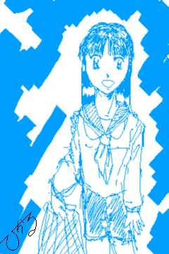
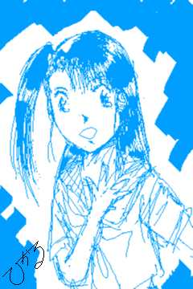

カーニバル サマー！サマー！
中編
文及び画：ことぶきひかる
異変は、２限目が終了後、トイレの時に起こった。
予兆は、朝からあった。
腹部に、なにか、たまっているかのような重い痛みを覚えていたが、祖父母に
心配をかけたくないと言う想いから、真紀は、無理をして登校していた。
２限目の休みにトイレに入ったのは，尿意を覚えたからで，特に深い意味があ
ったからではない。
女性の身体になって、もう１月，いい加減、座っての排尿にも慣れてきていた
。
喪失感だけは、いまだ，拭いきれていなかったが・・・
その日も、特に意識せずに、全てが済むはずだった。
便器の中の赤い流れをみるまでは・・・
便器の中に溜まっている水の中に，いきなり出現した，赤い絵の具を落とした
かのような染み・・・
最初は、痔かと想いかけた真紀は、数秒後，それがありえないことに気づき、
更に数秒後、それが本当は，なんなのか気づいてしまった。
生まれたときからの，正真正銘の女だとしても、それを迎えたときの衝撃は、
決して小さなモノではない。
ましてや、真紀は、１月前までは、男・・・少年だったのだ。
自分に、それがきてしまったと知ったときの衝撃は、ガン告知の比ではない。
それまでの真紀は、理屈では、自分の身体が少女であるということは知っては
いても，どこかで、本当の女というより、女装しているという感覚の方が強かっ
た。
しかし、この赤い流れが意味することは，真紀が，正真正銘の女になってしま
ったこと以外のなにものでもなかった。
真紀は、いきなり後頭部をハンマーで叩きつけられたかのような衝撃を受けた
。
いや、いっそのことハンマーで殴られた方が気が楽だったかも知れない。
もしかしたら，そのまま即死できたかも知れないのだから。
おぼつかない足下で，トイレを出た真紀を、優が待っていた。
「ゆ、優ちゃん・・・ボク、ボク・・・」
「ど、どうしたの？真紀ちゃん。」
始めてみる，真紀の不安そうな顔に，優は驚きを隠しきれない。
「ボク・・・ボク・・・」
ショックの余り、真紀は、次の言葉を出せない。
瞳が潤みだし、今にも泣き出してしまいそうな真紀の姿に，優は、どうにか事
態を把握した。
「あ・・・もしかして、真紀ちゃん、生理が、来ちゃったの？」
優の囁きに，真紀は、力無く、小さく頷いた。
「と、とにかく、保健室、いこ。」
優に手を引かれて、真紀は、保健室へと歩いた。
「せんせー、真紀ちゃん、生理が、始まっちゃったって。」
保健室に，他に誰もいないことを確認すると、優は、保険医の中島に駆け寄っ
た。
「あらまあ、それは、大変だわ。」
小学校の保険医だけに、こう言ったことには、慣れているのだろう。
特に驚いた様子もなく，中島は立ち上がると，戸棚の中を探り始めた。
優は、まだショックが抜けきらず，蒼白な顔の真紀を、椅子に座らせると、自
分も空いている椅子に腰掛ける。
「はい、それじゃ、これね。」
真紀は，中島から，替えの下着とポケットテッシュを二まわりほど大きくした
ような包みを渡された。
包みの正体はすぐに分かった。
想わず、真紀の顔が赤くなる。
「これ、ナプキンだけど、付け方って分かる？」
中島の問いに、真紀は、顔を赤くしたまま，横に激しく振った。
「そう・・・これから先、ずっと、使うことになるから、ちゃんと覚えておか
ないとね。
先生が，やってみせるから、よく見ておくのよ。」
そういうと、中島は、慣れた手つきで、しかし、ゆっくりと，ナプキンを下着
に取り付けてみせる。
「一応、説明書もついてるから、後は、これを見てね。」
中島は，残りのナプキンを、真紀へと手渡す。
「担任の先生には、私から、いっておくから，今日は早退なさい。
落ち着くまで、少し保健室で、休んでからね。」
優は、真紀が、ベッドに横になるまで付き添ってくれた。
「真紀ちゃん，それじゃ、気を付けてね。」
「うん・・・優ちゃん，ありがとう。」
ベッドの中で、真紀は小さく手を振る。
カーテンが閉じられると，気が弛んだせいか，朝からの腹部の痛みが蘇ってき
た。
それに伴うように、体中の関節やらが、下手なオーケストラのように，一斉に
痛みはじめた。
「女のコって・・・こんなに痛いのかよ。」
痛みと苛立ちのせいか，無意識のうちに，口調が正紀に戻っていた。
そう呟く声も、痛みのためか、語尾がかすれている。
寝ていても痛みが引くわけでもないので，４限目の途中で，真紀は早退した。
「ただいまぁ・・・」
「あら、真紀ちゃん、どうしたの？」
いきなりの孫娘の早退に，祖母は、驚きと不安を隠しきれないようだった。
「うん、ちょっと具合が悪かったから，早退した・・・の。」
「え、大丈夫？真紀ちゃん？」
ここまで、特に問題がなかっただけに、なにか後遺症でも出たのではないかと
，祖母が顔が不安に曇った。
「う、うん、ちょっと、具合が悪いだけだって・・・ボク、寝てるから・・・
」
逃げるようにして、真紀は，自室へと駆け上った。
パジャマに着替え、べっどにもぐり込んだものの、体の不調と重い痛みは治ま
りそうにない。
どこにも、ぶつけようのない苛立ちと怒りを抱えたまま、時間だけが過ぎてい
く。
不意に、ドアをノックする音が聞こえた。
「真紀ちゃん，お昼、お粥，作っただけど，どうする。」
「いらない。」
祖母の声に、苛立っていた真紀は、つい、素っ気ない返事を返してしまう。
「そう・・・晩御飯、食べたいモノがあったら、いってね・・・」
沈んだような祖母の声に、真紀は、流石に、苛立ちに任せて，そっけない態度
をとってしまった自分に罪悪感を覚えた。
「・・・ボク、マカロニグラタン，食べたいな・・・」
マカロニグラタン自体には，特に意味はない。
ただ、何か言わねば、祖母に申し訳ない気がして、取りあえず、頭に浮かんだ
ものを口にしたに過ぎない。
「・・・マカロニグラタンね。じゃあ、お婆ちゃん，買い物に行って来るから
。お留守番お願いね。」
そこで、真紀は，あることに気づいた。
今夜は、サークルの練習の日だ。
この苛立ちと痛みでは、とても、練習にさんかすることなど，おぼつかない。
「お婆ちゃん・・・サークルのほう，具合悪いから、休むっていっておいて。
」
「・・・そうね・・・お婆ちゃんが電話しとくから、真紀ちゃんは，ゆっくり
と休んでね。」
初潮故の生理不順もあり、それから１週間，真紀は、重い痛みと不調に悩まさ
れることになった。
それでも，サークルを休みっぱなしということには、真紀自身、どこか、辛抱
できないところがあり，痛みを我慢して、練習に参加し始めた。
だが、まだナプキンを外すわけには行かず，真紀は、やむなく、はき慣れたス
パッツではなく，ジャージ姿で，練習に参加した。
真紀の不調，そして、いつもとは違う服装から、感ずいたのだろうか。
女性メンバーが、それらしい会話を交わし始めていた。
練習が終わり，いつものように、雄二は、真紀を送って行くべく，一緒に帰路
に就いた。
「真紀ちゃん。本当に、大丈夫か。なんなら、背負って行くけど。」
まだ、身体が本調子ではなく，練習中も，つまらない失敗を繰り返していた真
紀に気づいたらしく、雄二は，心配そうに声をかける。
「ん、大丈夫。大丈夫だよ。」
そう応えながら、真紀は、雄二が、自分に初潮が来たことを感ずいているので
はないかと不安になった。
男とはいえ、高１の男子ならば，真紀の年頃ならば，生理があることを知って
いるはずだ。
雄二にだけは、知られたくない。
「それなら、いいけど・・・でも、カゼの時は、無理に出てくるもんじゃない
よ。」
「別に、ボクは，カゼひいてるわけじゃないって！」
「カゼじゃない？じゃあ、どうしたんだ？」
全く気づいていない雄二の鈍感さには、流石に苛立ちを覚える。
感ずかれたくないとは想っていても，まるで、気づいて貰えないと言うのも，
また気にくわない。
「・・・もう！雄二お兄ちゃんのトーヘンボク！」
そう叫びながら，真紀は，ぷいっと顔を背け，雄二を置いて、早足で歩き始め
た。
「お、おい、真紀ちゃん、どうしたんだよ。」
雄二が、真紀に対して，なにか申し訳ないという態度を取りだしたのは、じつ
に２週間も後のことだった。
視界に突然、ディフェンスが割り込んできた。
避けるには，勢いが載りすぎていた。
顔と胸に強い衝撃・・・低い鼻と、まだ膨らみかけの胸が潰れてなくなるんじ
ゃないかと想うより前に，視界が１８０度回転した。
全身・・・特に脚に激痛が走る。
冷たい床の感触と，駆け寄ってきたサークルメンバーの姿に，真紀は、自分が
、転倒したという事実に気づいた。
「真紀ちゃん、大丈夫か。」
サークル代表の、心配そうな顔と口調に，ようやく、真紀は、意識が回復し始
める。
自分をとし囲むメンバー・・・当然，雄二も，その中にいた。
「あ、大丈夫です。大丈夫。」
そういって、立ち上がろうとした瞬間，右足首に激痛が走った。
「！」
声こそあげなかったものの、顔が苦痛に歪む。
「お、おい、無理しなくていいよ。おーい，救急箱。」
メンバーの１人が、救急箱を持って駆け寄ってくる。
テーピングがまかれ、冷却スプレーが吹きかけられたが、これは、あくまでも
、応急措置に過ぎない。
状態にもよるだろうが、一応，念のため、後から、医者に見せた方がいいかも
知れない。
「軽い捻挫みたいだな。
けど、今日は無理しない方がいいけど，帰りはどうするか・・・そうだ。雄二
，いつも、お前が送っていくんだから、おんぶしていってやれよ。」
「え、オレがですか？」
雄二は、一瞬、怪訝そうな表情を見せる。
「よし、決まりだな。真紀ちゃん，今日は、雄二におんぶして貰いな。変なこ
とされたら，後で，ちゃんと，俺達に教えるんだぞ。」
「ちょっと、待ってくださいよ。オレが，なんでそんなことを・・・」
「しないって言うなら、おんぶしてやるって事だよな。」
「・・・まあ、真紀は妹みたいなもんだから仕方ないか。」
サークル代表に言いくるめられて，雄二は、やれやれといわんばかりに，大袈
裟なジェスチャーをしてみせる。
（妹・・・）
雄二の言葉に、真紀の眉間に皺が寄ったが，メンバーは痛みのせいだと想い，
誰も気にしなかった。
妹・・・確かに、そう想われても仕方ないことなのだが，言い切られたことは
，真紀の心に、小さな傷を与えていた。
（ボクって、妹に過ぎないんだ・・・）
これまでの雄二の優しさが、不意に虚しいものに想えてくる。
「それじゃ、真紀ちゃん。帰ろうか。」
雄二は、片膝を着くようにして腰を下ろし，両手を後ろにまわす。
捻挫した方の脚をかばいながら，真紀は、その背中に，身体を委ねた。
不意の浮遊感。
雄二は、意外なほど軽々と真紀の身体を持ち上げた。
視界が急に高くなったなったこともあり、一瞬、平衡感覚を失った真紀は、慌
てて、雄二の首にしがみついた。
真紀は、雄二が、少年から抜け出そうとしている逞しい男性であり，自分が、
小さな女のコであることを，今更ながらに思い知ることになった。
「それじゃ、いこうか。真紀ちゃん、しっかりと掴まっててくれよ。」
自分の脚でないせいか，その日の帰り道は、妙に長く感じられた。
だまっていると、間が持たないため，真紀は、何気なく、口を開く。
「お兄ちゃん・・・」
「んん、どうしたい。足が痛いか？」
「そうじゃなくて、ごめんなさい・・・」
「あ、足のことか。気にするなよ。」
「うん・・・ねえ、雄二お兄ちゃん・・・」
「どうしたんだよ。今日は、変に，しおらしい・・・女の子みたいじゃないか
。」
「それじゃボクが女のコじゃないみたいじゃない！・・・じゃなくて、ね、ボ
クのこと、どう想う？」
そう聞いてみたのは、先ほどの「妹みたいなもん」という言葉が耳に残ってい
たからだ。
不意の真紀からの問いかけに、雄二は、しばらく考え込んだ後、口を開く。
「そりゃあ・・・真紀のことだろ・・・まあ，妹みたいなもんだな。手がかか
るけど、面倒みなくっちゃいけないっていうか。」
「そっか・・・妹かあ・・・」
４歳という年齢差，そして、自分がサークルに紹介したことからの責任感から
、雄二が，真紀のことを，妹という存在として扱っていてもなんら不思議はない
。
だが、真紀本人にしてみては，自分が「妹」にすぎず、「女」として見て貰え
ないことに、軽い不満を覚えていた。
「けど、いきなり、どうしたんだよ？そんなこと聞くなんて。」
「なんでもない。」
自分の本心を雄二には知られたくなく，真紀は、誤魔化すかのように、雄二の
首にしがみついた。
一瞬、雄二の息が詰まる音が聞こえた。
そして、次の瞬間、雄二は、いきなり駆け出した。
「え、雄二お兄ちゃん。」
真紀の声など届いていないかのように，雄二の駆け足は止まらない。
「雄二お兄ちゃん、そんなに急がなくてもいいよ。」
しかし、雄二の脚は、止まるどころか、緩まることすら知らない。
あっというまに、真紀の家まで，着いてしまった。
「軽い捻挫のハズですけど，クセになると大変ですから、明日、念のため、医
者にいった方がいいかも知れません。」
それだけ告げると、雄二は足早に去っていってしまった。
まるで、逃げ出すように・・・
何気なくしがみついたとき，自分のまだ小さな胸の膨らみの柔らかさが、雄二
を駆け出さずにはいられなくさせたことを，真紀は、気づいていなかった。
中学の制服が届いたのは、３月も中旬に入った頃だった。
箱を開けると、まだ、着崩れも日焼けもしていないセーラー服が綺麗に畳まれ
て入っていた。
紺のスカートに，黄色のスカーフ。
なんとなく恥ずかしいような、それでいて、嬉しいような、落ち着かない気分
・・・
（雄二お兄ちゃん、セーラー服のボクを見たら，どんな顔するんだろう？）
そんなことが、頭に浮かぶ。
（そうだ。今日，土曜だから，体育館脇にいるはずだよね。そうだ。見せにい
ってみよう！）
驚くかな。似合うって言ってくれるかな。
そう想うだけで、つい嬉しくなって心が弾んでしまう。
（そうだ！どうせ、見せにいくんなら・・・）
真紀は、洗面所に駆け寄ると、髪を洗い始めた。
普段は、おざなりのトリートメントも、しっかりと行う。
ドライヤーで、濡れた髪を乾かすと，丹念に梳かし直す。
セーラー服を頭からすっぽりと被り、スカートのホックを止めると、乱れてし
まった髪を，もう一度、梳かし直す。
普段は、ここでポニーテールにするのだが、今日は、あえて、おろしたままに
してみた。
どんな感じに仕上がったのか、確認しようと鏡に向き直った真紀は、言葉を失
った。
鏡には、高校野球のポスターに使われていても不思議ではない，美少女・・・
清楚な中に，活力を感じさせる少女が映し出されていた。
「ボ、ボクって，けっこう，可愛かったんだ・・・」
意外なほどの自分に変貌ぶりに，その姿を見て，ドギマギしている雄二の姿が
脳裏に浮かんだ。
念には念をとばかり，髪を梳かし直し，服の小さな乱れも整える。
オーディコロンか何かをかけようかとも想ったが、それでは、あまりにも露骨
すぎるような気がして，取りやめた。
準備万端なことを確認し、いざ出かけようとした真紀は，あることを思い付い
た。
その表情が，悪戯を想いついた少年のように、にんまりとしたものになる。
早速、その準備を整えるべく，真紀は，タンスの引き出しを開けた。
案の定、雄二は、いつもの体育館脇で，相変わらず、シュートの練習に勤しん
でいた。
今日は何時にも増して、練習に集中しているせいか，真紀が、すぐそばまで来
ていることにも気づかないようだ。
離れたところで見つかったら、元も子もない。
はき慣れていないスカートが，かえって、歩幅を小さく、そして緩やかなモノ
にしてくれた。
雄二まで，後５メートルまで、近づいた。
「お兄ーちゃん。」
真紀の声に、雄二が振り返る。
「よお、真紀・・・？！」
いつものことだけに、何気なく振り返った雄二の顔が強ばった。
真紀のセーラー服姿に，かなりの衝撃を受けたらしい。
思い直せば、真紀は、雄二の前で、スカート姿になったことは１度もなかった
。
「どー、可愛い？今日ねー、中学の制服が届いたから，お兄ちゃんに見せに来
たんだよー。」
スカートの端を軽く持ち上げて見せながら，真紀は、微笑んだ。
「な、なんだ。真紀か。」
「なんだ、真紀かはないでしょ。」
「ふーん、スカート，はくと，女の子になるんだな。」
自分の胸の高鳴りを真紀に知られないよう，押し隠そうとするように，雄二は
皮肉めいた言葉を呟く。
「あ、ひっどーい！それじゃ、ボクが、女の子じゃないみたいじゃないか！」
雄二の言葉に、真紀は、頬を軽く膨らませた。
「ボクなんて、言葉遣いしているクセに、女の子だと想われたいのか。」
「ふーん、それじゃ、ボクが女であるショウコ見せたげようか。」
そういうが速いか、真紀はいきなりスカートのホックに手を伸ばした。
「あ、ば、ばか、やめ！」
雄二が制止するより速く，真紀は、ホックを外すと，スカートを脱ぎ下ろした
。
「あ？！やめ！」
雄二の顔が、まずい！と言わんばかりの中に、ほのかな期待が混じったものに
変わる。
「・・・ああ？」
だが，数瞬の後，雄二の声のトーンが、数オクターブ下がり，顎が情けなく垂
れ下がる。

真紀がおろしたスカートの下には、下着ではなく，短めのスパッツが，しっか りと，はかれていたのだ。
４月、晴れて、真紀は中学生になった。
小学校と違い，制服があるだけに、いやでもスカートをはかなければならない
。
今更ながらに、もっとスカートをはいて慣れておけば良かったと後悔したが，
もはや後の祭りである。
腰の辺りの風通しの良さに悩まされつつ，日々を過ごすことになった。
幸いと言うべきか、優とは，また同じクラスになれた。
まだ、「女」になれてはいない真紀にとって、彼女は頼れる存在だった。
まもなく、新しい友人も出来た。
「橘 沙織」という一見，おとなしめの落ち着きのある少女だったが、なぜか
活発系の真紀や優と気があった。
優とは異なったタイプの少女である沙織の存在と交流は、少しずつではあるが
，真紀の心に「少女」への，そして「女」への憧れを育ませることになった。
沙織みたいに、落ち着いた，可憐な・・・そんな女の子になりたい。
しかし、それが、雄二への感情から来ていることに、真紀自身は、まだ気づい
ていなかった。
きっかけは、昼食時の会話からだった。
お昼に関しては，仲のいい優や沙織とお弁当を囲むことがほとんどだ。
その日も、いつものように，会話７割食事３割というペースで進む昼食時に，
何というでもなく，３人の会話は，サークル、そして雄二へと，移った。
「ねーねー、真紀ぃ。この前，話してた雄二さんと，どうなったの？」
この年頃の少女は、誰もが耳年増だ。
自分の仲間が、それらしき関係になりはじめると、途端に、よからぬ想像をし
始める。
「そんなんじゃないって。雄二お兄ちゃんは，同じサークルに入っているから
、それで・・・」
「ふーん、でも、真紀、あんた、その雄二って人目当てに、サークルに入った
んじゃないの。なにかにつけ、雄二お兄ちゃん雄二お兄ちゃんだし。」
「そ、そんなじゃないよ。」
否定しながらも、真紀は、自分の顔が赤くなることを感じていた。
「ま、いいけどね。」
幸いと言うべきか、優の追求は、それ以上進まず、真紀は、安堵した。
だが、安堵した瞬間，真紀は気づいた。
自分が、安堵していたのは、雄二との関係を、それ以上、追求されなかったた
めだと。
逆に言えば、自分は、追求されては困るような関係を雄二に求めているのだ。
（え、そんな・・・ボク・・・ボク、雄二・・・雄二お兄ちゃんのこと・・・
）
優に指摘されるまで，気づかなかった。
自分が、雄二に対して、友情ではない、恋といえるような感情を抱き始めてい
ることに。
これまで、自分が雄二に対して，好ましいと言える感情を持っていたのは、そ
の面倒見の良さと，正紀だった頃の男同士の友情を引きずっていたためだと，想
っていた。
確かに、その要素は否定できないだろう。
だが、今の自分が雄二に抱きかけている，いやすでに抱いている感情は、それ
だけではない。
鈍感なまでに優しすぎる雄二への苛立ち。
そんな雄二への，嫉妬にも似た自分の感情。
それは、自分が雄二に，恋をしていることではないのか。
相手が，かつての「親友であり、現在の肉体が女のものであるとはいえ、自分
が、男性に対し、好意の範疇を越えた恋心を抱くようになるとは、想ってもみな
いことだった。
だが、今の自分の感情を，「恋」以外の何物だと言えるのだろう。
自分が自覚したことにより，少女としての恋心が，真紀の感情を，急激に支配
していこうとしている。だが、不意に真紀は気づいた。
雄二は言っていた。
「妹みたいなもの」だと。
それは、女が男に対して言う「いいお友達でいましょう。」と同じくらいの残
酷さを秘めていた。
成就せぬ恋を、自分は抱いているのではないか。
雄二の優しさは、所詮、年下の少女への責任感からくるものではないのだろう
か。
それは、あくまでも責任感から来るものであって，愛情にはなれても、恋には
ならない。
真紀の表情は，否が応にも沈んでいった。
夏休みまで２週間。
その日も、雄二と真紀は、体育館脇で、練習に勤しんでいた。
体育館脇が狭いこともあるが，２人では，出来る練習も限られてくる。
この日も、２人の練習内容は，フリースローなどのシュートが主体のものだっ
た。
スリーポイントのラインから，雄二のシュートは、リングの上の半周後，ネッ
トを通過する。
「お兄ちゃん，調子いいじゃない。」
「ああ、練習だと、うまく決まるんだ。ただ、もう少し，本番でも、入ってく
れればなあ。」
「ホント、本番に弱いんだね。そんなことだから、肝心な場面でフリースロー
外すんだって。大川町との決勝戦の時みたいにさ。」
真紀の脳裏に、まだ自分が正紀だった頃・・・５年前のあのことが浮かび上が
る。
当時、小学６年生だった正紀と雄二は，町別対抗のバスケットの試合で、決勝
戦まで上り詰めていた。
残り時間１０秒あまり、正紀達は１点差を追っていた。
相手側のファアルで、雄二は、フリースローのチャンスを得た。
これを決めれば，同点に持ち込める。
だが・・・ボールは、リングで跳ねた。
結局、１点差に追いつけず、正紀達は，準優勝に終わった。
あの後、自分の失敗に項垂れる雄二の後ろ姿を，正紀は、しばらく忘れること
が出来なかった。
「おい、真紀、なんで、そのことを知ってるんだ。」
いきなり、雄二は、問いつめるように視線を真紀に向けた。
「え・・・え、あ、そ、そう、雄二お兄ちゃん，前、話してくれたじゃない。
バスケット始めたきっかけとかいって。」
しまった！と想ったときには、もう遅い。
つい１年前に会ったばかりの真紀が、５年前のことを，そこまで知っているは
ずがないのだ。
どうにか、言葉を繋いで，真紀は、その場を誤魔化そうとする。
「いや、そんなはずはない。オレ自身、ついさっきまで、忘れていたことなん
だからな。」
普段は、大雑把な雄二にしては信じられない記憶力と判断力だった。
その場の継ぎ足しで，誤魔化せるような状態ではない。
まさか、真紀と正紀が同一人物だとは想わないだろうが，真紀が何か隠してい
るのではと疑うことは間違いない。
しかし、この場は、どう応えたらよいのだろう。
正紀としても真紀としても、答えを見つける術はなく，突然、真紀は，きびす
をかえすようにして、駆け出していた。
「お、おい、真紀ちゃん。」
雄二の声に，なんと応えたらいいのか，答えが見つかるはずもなく，真紀は、
雄二がしたように、ひたすら走り続けた。
あの日以来、真紀は、サークルの練習には，一切顔を出してなかった。
サークルに行けば、いやでも、雄二と顔を会わせなければならない。
顔を会わせれば、当然，雄二は・・・・
そんなある日、真紀は、いつものように、優と沙織と一緒に帰宅しようと校門
をくぐろうとした時，彼女達の前を塞ぐように、男性が現れた。
「え？雄二お兄ちゃん」
間違いなく、その人物は、雄二に違いなかった。
おそらく、サークルにすら出てこようとしない真紀にしびれを切らしたのだろ
うが，電話や自宅に押し掛けるならともかく，まさか、学校に待ち伏せていると
は想ってみないことだった。
だが、優と沙織は、真紀の態度から、変なことを連想しだしたらしい。
「ねーねー、真紀。この人，誰？・・・あ、もしかして・・・」
「そ、そんなんじゃない・・・バスケのサークルの人だって。」
「あ、毎日、真紀が、のろけてる，例のアレね。」
「そそ、そんなんじゃないよ・・・」
赤面しつつ、真紀は否定しようとしたが，この状況では、何を言っても無駄な
ことだった。
一方的に、２人の関係を誤解したまま、優と沙織は、顔を見合わせた。
「それじゃー，真紀。またねー。」
「あ・・・」
優と沙織は、気をきかせたつもりか、さっさと帰ってしまう。
校門のそばで，取り残された真紀と雄二。
「真紀ちゃん，話したくなければ、話さなくてもいい。でも、このままじゃ、
オレが納得できない。真紀ちゃんの口から、はっきりとした返答が欲しいんだ。
」
「それって、もしかして、正紀って言う人のこと？」
「正紀！それじゃ、真紀ちゃん、正紀のこと，知ってるのか？」
真紀の口にした「正紀」の言葉に、雄二の顔色と表情が変わる。
こうなれば、もはや雄二には、全てを話すべきだろうか。
少し前から、そのことは考えていた。
「親友」であり、「お兄ちゃん」である雄二に，隠し事を持つことは、真紀に
罪悪感を抱かせていた。
両親とは、誰にも話さないと約束したけれど，雄二ならば、他の誰かに，バラ
すとは考えられない。
しかし、全てを話した後、自分と雄二は、どうなるのか？
もはや、雄二と正紀という親友ではいられないことは確かだ。
だが、雄二と真紀としての関係は・・・
「そんなに正紀って人のこと、知りたいの？」
決心がつかず、真紀は、雄二に問いかける。
雄二の返答で、自分も、それを決めるつもりだった。
「あ、ああ、なんでもいい。知っていることがあるのなら、教えてくれ。」
雄二の返答に、真紀は、意を決した。
「全部、話すから・・・でも、ここじゃ話せない。場所を変えて。」
校舎と校舎の隙間・・・２人が，やっと並んで歩けるかどうかという狭い空間
に、真紀は、雄二を誘った。
「こんなところじゃなきゃダメなのかい。」
少し不安そうに，雄二は呟く。
「ここなら、誰も来ないだろ。」
「誰かに、聞かれちゃマズいことなのか。」
「ああ、正紀のこととなれば、それくらい、分かって貰えるだろ？」
「あ、そうだね。」
真紀は、自分が、正紀としての口調と言葉遣いで話していることに気づいてい
なかった。
雄二に全てを話そうと決意したことが，真紀の心を，正紀だった頃に，引き戻
していたのかも知れない。
「雄二・・・お兄ちゃん，これから言うこと、信じられなかったとしても，最
後まで、聞いて欲しいんだ。」
「あ、ああ、分かった。」
雄二は、どこか力無く頷く。
「信じられないかも知れない。信じて貰えないかも知れない。
だけど、聞いてくれ。実は，オレ，正紀なんだ。」
真紀の言葉に、釘でバナナが打てるのではと想えるほどに，雄二の表情が凍り
付く。
当たり前だ。
自分の親友がいきなり４歳も年下でしかも性転換して，目の前にいるのだ。
幽霊に会ったとしても、ここまで驚かないだろう。
そっちは、死んでいるで、まだ決着がついているのだから
だいち、単なる性転換だけではなく，容姿も、がらりと変わっているのだ。
それをすんなりと受け入れてしまう方が，かえって危ない。
信じる以前に、驚くのが当然と言える。
予想していた行動とはいえ，真紀は、一抹の寂しさを感じていた。
もしかしたら、うすうす気づいていた。いや気づいてくれていたのでは、とい
うほのかな期待を，真紀は、これまで、ずっと持ち続けていたのだ。
「お、おい、真紀ちゃん。悪い冗談は、その辺で、やめてくれよ。」
雄二の言葉に、真紀の表情が、悲しげに変わる。
「やっぱり、信じて貰えないか・・・でも、これを聞いたら・・・」
真紀は謳うように、正紀としての、雄二との思い出を語り始めた。
エロ本にＡＶ，修学旅行の覗きに、某ドライブインにゲットしたカプセル入り
の下着・・・
真紀の言葉に、雄二の顔が次第に青ざめていく。
一方、話を続けながら、次第に真紀の心は沈んでいった。
もう、多分、雄二とは、これっきりだろう。
妹のような「真紀」としても、親友としての「正紀」としても・・・
全てを話し終えた後，雄二の顔は土左右衛門のように青ざめ、真紀の表情は、
悲痛に染められていた。
「お、おい、それじゃ、本当に、お前、真紀ちゃん、君は、ウソや冗談じゃな
くて、その・・・正真正銘に、正紀なのか？」
「ここまで、話しても信じて貰えないのか。」
予想していたとはいえ、雄二に信じて貰えないことは，少し辛いことだった。
「でも、正紀は，確かに男だったはずだぞ。なんどか、一緒にお風呂に入った
こともあるし，立ちションを一緒にしたこともあるのに。」
「どうやら、こういう家系らしいだ・・・坂城の家は、元々，男が生まれにく
い上に，一世代に，だいたい一人か二人，こういう風に，男に生まれても，後に
なって女に性転換する人間が出てくるらしい・・・」
真紀の説明に、雄二の表情が更に蒼白になる。
「オレの場合、高校になった途端、いきなり、性転換が起こったんだ。
いくらなんでも、息子が性転換したなんて事になれば，近所に誤解が生じると
言うことで、本当は，引っ越さなければならないところだったんだけど、無理い
って，オレだけ、爺ちゃん家に移ることを許して貰ったんだ。幸いというか、外
見も，こんなに変わっちゃったから，バレる心配は無かったし。実際、雄二も、
気づかなかったしな。」
「でも、正紀は、オレと同い年だっただろ？それがなんで，小学生に・・・」
「どうしても、身体を造り替える都合上、一度、少女の肉体年齢からやり直す
必要があるみたいなんだ。子宮とか卵巣とかを、いきなり活動状態にするわけに
はいかないから、その前・・・生理とかが来る前の身体から、始め直さないと。
」
真紀の説明に，雄二は、その意味をしばらく反芻した後、口を開く。
「けど、なんで，いってくれなかったんだ。会ったその時とは言わない。けど
、これまで何度も，機会があったハズなのに。オレが、お前のことを、正紀のこ
とを，どれだけ心配したか。」

「いえるわけないじゃないか！」カーニバル サマー！サマー！ 中編 終
特別付録
榊家と坂城家の歴史
榊家は、鎌倉時代から、男子が生まれにくい血筋に加え，希に生まれた男子は
、成長後、女子へと性転換する特殊な家系でした。
この「転換者」には、いつくかの特徴があります。
まず、「転換」が起こるのは、たいてい１５歳前後、こえは、肉体年齢と言う
より，精神的な意味合いの方が強かったようです。
なんせ，この頃は、元服以前に、平均寿命が短かったせいで、１５歳くらいで
，大人扱いでしたから。（この年頃なら，子供もつくれるわけだし。）
大人になると言う自覚が，「転換」のきっかけになるようです。
２つめとしては、「転換者」には、予知能力や、強力なカリスマ性など，いわ
ゆる「巫女」としての能力が、備わっていることです。
この力が、地方とはいえ，榊家繁栄の礎になりました。
また、榊家は，他家との婚姻を，厳しく禁じ，近親婚が主体になっていました
。
これは、榊家の血の薄くしないためと，他家へと榊家の力，「転換者」の血が
分散することを防ぐことが目的でした。
しかし戦国時代も終わり，江戸時代に移ろうという頃，坂城家は，時の権力者
に逆らえず，遂に分家を出します。
これが、坂城家です。
おそらく、予知によって，この後２００年以上にわたって，平和な時代が訪れ
ることを知った榊家は、この先、独立無縁をを誇示し続けるのが困難な時代に差
し掛かることを知り、それならば、いっそのこと、権力者と結びついて，家の繁
栄を図ろうとしたようです。
これ以後、明治時代までは、榊家と坂城家は，予知能力などに助けられ，飢饉
や災害などを、乗り越えていきます。
榊家も坂城家も，江戸時代末期を最後に，「転換者」が生まれなくなります。
理由は分かりませんが，あまりにも平和な時代が、影響したことは間違いない
ようです。
明治維新，第２次世界大戦，その後の農地解放により，榊家も坂城家も，没落
の一途をたどり，坂城家は分家であることもあり，「転換者」の伝承自体も曖昧
なモノになってしまいます。
ただ、本家である榊家は，分家である坂城家とは疎通になるものの，どうにか
、この伝承を語り継いでいきます。